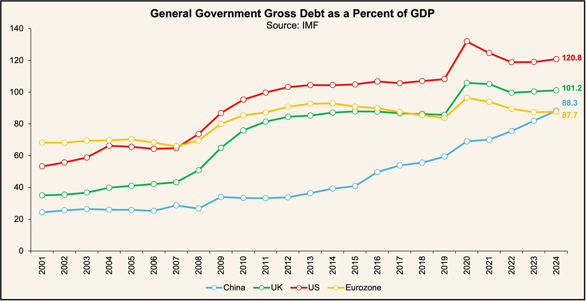

In recent months, it has become clear that independent institutions with a critical role in the economy are coming under increasingly pressure from political leaderships. In the United States, President Trump has launched unprecedented attacks against the Federal Reserve (Fed), attempting to intervene directly in the setting of monetary policy with the goal of lowering interest rates. In this new environment that is emerging accompanied by structurally higher real interest rates the architecture of the euro and the institutional depth of the European Central Bank (ECB) can offer strategic advantages for the common currency.
The U.S. Treasury Secretary, Scott Bessent, has repeatedly emphasised the importance of reducing the borrowing costs of US government bonds (focusing on the 10-year rate) in order to facilitate the refinancing of the massive public debt. However, the precondition for such a reduction to some extent is the adoption of looser monetary policy by the Fed. Until now, however, the central bank has maintained a cautious wait-and-see stance mainly due to the uncertainty created by Trump’s policies on trade, immigration, and fiscal matters.

These developments take place within an already fragile framework of fiscal dominance in the United States. The federal budget remains deeply in deficit, debt continues on a steadily rising long-term trajectory, annual debt-servicing costs now exceed defence spending, while the “One Big Beautiful Bill Act” is expected to further worsen the fiscal outlook and add more than $3 trillion to the debt over the next decade, according to the Congressional Budget Office (CBO). As many scholars have pointed out, within this context the effectiveness of monetary policy in taming inflation is significantly constrained.
And while Jerome Powell is keeping some distance from political pressures (for now), the operational independence of the Fed should not be taken for granted. The US President controls key appointments to the Fed’s Board of Governors while Congress controls the central bank’s budget. Moreover, since the Fed was established by an act of Congress in 1913 it could theoretically be amended or even absorbed into the Treasury. Regardless of whether such a scenario materialises, even the minor impression that the central bank is surrendering to political influence in a period without a strong recession or external shock could destabilise inflation expectations and severely undermine its credibility. This institutional framework makes the Fed more exposed to the political cycle and to the objectives of each administration.
In contrast, the ECB has institutional features that shield it from similar pressures. Its creation through the Maastricht Treaty means that any revision requires unanimity among member states and constitutional-level procedures. This provides an institutional depth that makes it extremely difficult to alter the ECB’s mandate even if extreme political forces come to power in specific Euro area countries. As a result, the ECB is not exposed to national political cycles but is protected by the European legal framework which acts as a barrier to short-term political pressures.
The ECB’s mandate is also clear and straightforward as its sole primary objective is price stability. This makes it less exposed to political pressures, unlike the Fed which has a dual mandate of price stability and maximum employment. This dual mandate leaves room for interpretation and increases the chances of political interference. Quite often the two goals do not move in parallel. Efforts to contain inflation through higher interest rates may occur at a time when the labour market is already weak creating a direct conflict between price stability and full employment. In such moments, the prioritisation of goals clearly takes on a political dimension. The government may prioritise employment for reasons of social pressure or the electoral cycle while the central bank must weigh whether the greater risk lies in inflation or unemployment. This potential gap leaves the Fed far more exposed to political friction compared to the ECB whose mission does not allow for such contradictory interpretations.
Furthermore, European fiscal rules (Maastricht, Stability & Growth Pact) act as an institutional buffer that limits the risk of pressures on the ECB. Despite their flexible application and frequent exemptions they still provide a legal framework and supervisory process that enforce a degree of discipline. This is a critical difference from the US where the only comparable tool—the debt ceiling—functions as a political bargaining chip rather than a mechanism for long-term macroeconomic stability. In practice, the rules in the Eurozone restrain the excessive rise of debt and reduce the risk of governments pressuring the ECB to engage in debt monetisation. Without these institutional limits the ECB would be exposed to pressures similar to those the Fed faces today where the government seeks lower interest rates to reduce bond yields and ease the servicing of its ballooning public debt.
In a world moving away from globalisation and low interest rates and entering an era of fragmentation, higher inflation, and geopolitical tensions, the institutional advantage of the ECB becomes clearer. In this environment where pressures for lower rates will intensify, the ECB demonstrates greater institutional resilience, a clearer statutory framework, and less exposure to government interference. The US fiscal overexpansion and the growing politicisation of the Fed open a rare window of opportunity for Europe and create the conditions for strengthening the international role of the euro.